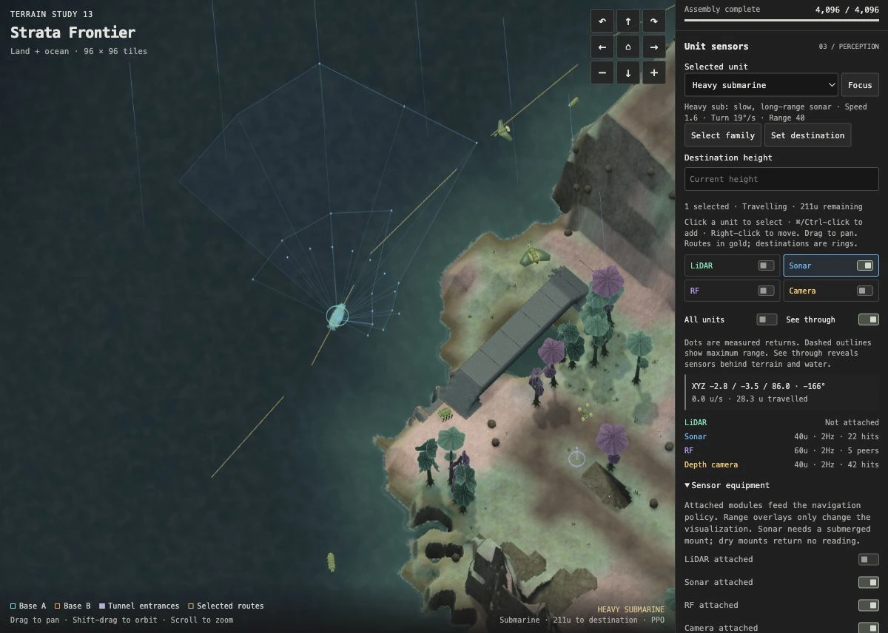
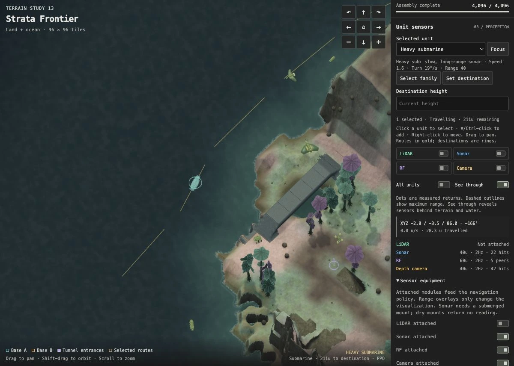
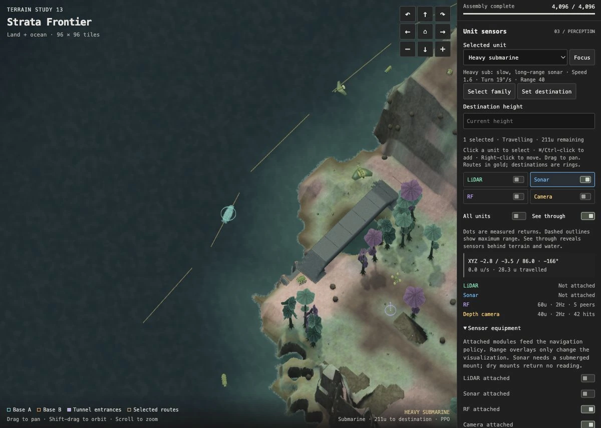

GEOMETRY / ~3 MIN
Trace a tunnel through the terrain
Toggle Isolate tunnels without moving the camera. Trace entrances and ramps back to the terrain. Which passages keep a ceiling, and which open to the sky?
Inspect this network ↗ALIENWARS / INTRODUCTION
We’ll start with sonar. You’ll change two controls, watch the readings, and trace how those readings reach the unit’s trained controller. The exercise runs in your browser.
You need a browser with WebGL 2. No installation or GPU setup is required.

LESSON 1 / BROWSER
Map Lab has separate controls for drawing sensor readings and attaching sensor equipment. In this exercise, you’ll use the sonar readout to find out what each control does. A policy is the trained controller that uses these readings to help choose the unit’s movement.
Choose an answer, then check the sonar readout in Map Lab.
Wait for the map to load, then click Focus under Selected unit. Scroll the inspector down and expand Sensor equipment.
Follow the three steps below. Each screenshot opens at full size when clicked.
Open the submarine exercise ↗Opens Map Lab in a new tab. Leave this guide beside it. First generation can take tens of seconds.
Leave the Sonar overlay and Sonar attached enabled. The blue fan shows the sampled directions around the submarine.
Find the Sonar row in the inspector. Here it reads 40u · 2Hz · 22 hits: a range of 40 world units, two samples per second, and 22 rays that hit something.

Turn off the blue Sonar switch beside LiDAR, RF and Camera. Leave the attachment switch alone.
The fan disappears, but the Sonar row still shows measurements. Hiding the drawing has not removed the sensor.

Turn the overlay back on. Under Sensor equipment, turn Sonar attached off.
The readout now says Not attached. There is no fan, even with the overlay enabled, because the sensor is no longer supplying measurements.
Reattach sonar to finish. Valid readings resume on the next scheduled sample.

Traffic was paused for these screenshots to keep the view fixed. In your live run, the hit count can change as the submarine and nearby units move.
The overlay draws the measurements already produced by the sensor. Hiding it leaves the sampling process running. Detaching the module disables that source of measurements, so the controller receives a flag indicating that sonar is missing.
The submarine may keep moving along the same route after you detach sonar: it still has other sensors and route guidance. To see whether losing sonar affects navigation, you would need to compare repeated missions from the same starting conditions.
A reading of zero hits means none of the sampled rays hit a surface within range. It is different from a missing or invalid sensor. Sonar needs a submerged mount above the seabed.
Seed links save the world and overlay settings, not equipment edits. Reload Map Lab to restore default equipment.
sensors.h attaches the module, samples geometry, and packs its observation. missions.h builds the policy input. alienwars.c connects the inspector; web/maplab/shell.html handles the two switches.
ADDITIONAL EXERCISES
Toggle Isolate tunnels without moving the camera. Trace entrances and ramps back to the terrain. Which passages keep a ceiling, and which open to the sky?
Inspect this network ↗
Start with unequal base heights, then select Symmetric and load the same seed. Compare bases and routes. Wave Function Collapse joins local tiles; global planning sets the larger layout.
Compare the layouts ↗LOCAL SETUP
Start with the included browser build and trained policies. No compiler or GPU needed. Install Git and uv, then run:
git clone https://github.com/rozgo/alienwars-gym.git cd alienwars-gym uv sync --locked uv run scripts/doctor.py uv run python -m http.server 8781 --bind 127.0.0.1 --directory docs
Open http://127.0.0.1:8781/learn/. Stop with Ctrl+C. If the port is busy, use 8782. The doctor command checks the required files and tools and reports anything missing.
Read AGENTS.md and .agents/skills/alienwars-start/SKILL.md. Help me run AlienWars locally and complete docs/lessons/sensor-equipment.md. Explain what each control changes, help me check the readings, and show me the relevant code.
The skill lives in the repo. If your agent does not discover it automatically, this explicit file-reading prompt gives it the same workflow. You can also follow every step by hand.
Serving the included build will not show C or web-shell edits. Run uv run scripts/doctor.py --target web, follow the compiler setup, then rebuild with uv run scripts/build_fleet_site.py. Native development is available on macOS and Linux.
NAVIGATION AND TRAINING
During training, units attempt navigation missions and receive rewards for their actions. Proximal Policy Optimization (PPO) uses that experience to update their controllers. The browser runs the saved controllers; training happens separately on a GPU.
C code simulates terrain, movement and collisions. Flecs stores the units’ current state.
Sensors measure surroundings. Odometry measures the unit’s motion.
A* finds a route. A route tracker supplies steering targets; PPO learns local movement adjustments.
Collects experience and updates five family policies together on a CUDA host.
WebAssembly runs the simulation and trained controllers. Raylib draws the result.
To test a new policy, run it on maps excluded from training. Compare its arrivals, contacts and stalls with the route tracker under the same conditions. A higher training reward alone does not tell you whether it can finish those missions.
The demo keeps the earlier policies because the most recent training run did not meet our reliability criteria. When a demo patrol gets stuck, code can restart its mission. An evaluation must count that failure separately from a successful arrival.
Cultivation and combat are future work. Every military unit is a biological entity; this universe has no humans or pilots.